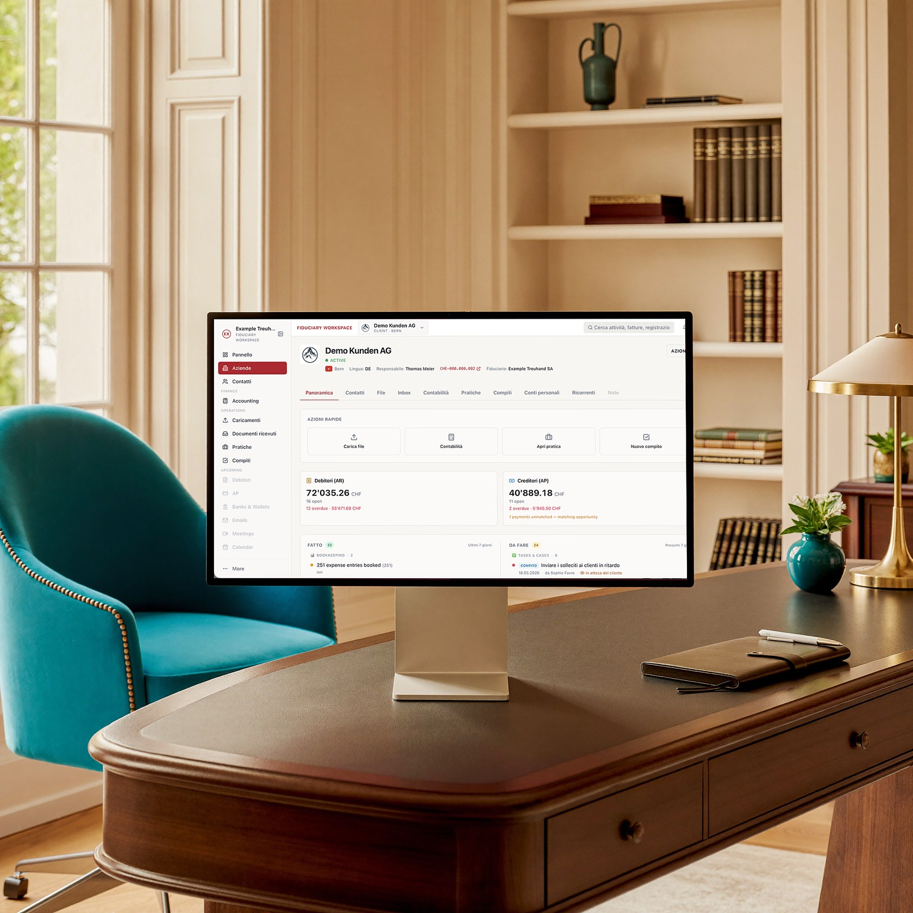

Le migliori fiduciarie della Svizzera— dalla start-up a 250 dipendenti
Collaboriamo con fiduciarie AI-native di primo piano nella Svizzera tedesca, romanda e italiana. Per le piccole imprese — una fiduciaria sempre a portata di mano. Per le più grandi — un back office finanziario completo, gestito dalla tua fiduciaria, senza un reparto finanziario interno.

Come assumere un direttore finanziario — senza il suo stipendio
Una fiduciaria moderna della nostra rete non si limita a tenere i conti. Gestisce il tuo back office finanziario dall'inizio alla fine, in tempo reale. Che tu abbia 0 o 250 dipendenti, ottieni la funzione finanziaria di un'azienda molto più grande — senza doverla costruire.
Molto più della contabilità
Ogni fiduciaria della rete se ne occupa per te — sotto il proprio nome:
Debitori
emissione e gestione delle fatture attive
Banca & cassa
conti e casse sotto controllo
Creditori
fatture fornitori e pagamenti, con approvazione finale sempre nelle tue mani
Acquisizione automatica dei documenti
giustificativi raccolti direttamente da casse e POS
Tempo & salari
rilevazione delle ore e calcolo degli stipendi
Numeri in tempo reale
bilancio e conto economico, in diretta, quando ti servono
Pensato per ogni dimensione
Piccola impresa
Smetti di fare tutto da solo e lascia alle spalle la fiduciaria lenta e cartacea. Una fiduciaria AI-native tiene i tuoi conti aggiornati — senza aumentare il personale.
Media & grande impresa
Non costruire un intero reparto finanziario. Una fiduciaria della rete ti dà un back office AI-native completo che cresce con te — a una frazione del costo di un team interno.
Finanze migliori, costi inferiori
Per le piccole e medie imprese una fiduciaria della nostra rete costa meno di una tradizionale. Per le più grandi è una frazione del costo di un contabile o di un team finanziario interno. Ottieni di più — visibilità in tempo reale, automazione, una visione da direttore finanziario — e paghi meno dell'alternativa.
Cosa le rende le migliori
«Le migliori» non è uno slogan — è una lista di criteri. Ogni fiduciaria della rete soddisfa cinque condizioni verificabili:
01Contabilità in tempo reale.
Le registrazioni vengono effettuate man mano che arrivano i documenti — non una volta al trimestre. Vedete il bilancio, il conto economico e la liquidità di oggi, non un rapporto sul passato.
02Ogni cifra riconciliata con i giustificativi.
Estratti bancari, casse e fatture sono riconciliati al centesimo. Dietro ogni registrazione c'è un documento.
03Un portale clienti con il marchio della vostra fiduciaria.
Inviate i documenti dal telefono in pochi secondi; lo stato dei conti e dei pagamenti è visibile in ogni momento. Niente più scatole di ricevute a fine trimestre.
04Hosting svizzero, protezione dei dati svizzera.
I dati sono conservati in Svizzera, trattati in conformità alla revLPD e archiviati per 10 anni (art. 958f CO).
05Una piattaforma, uno standard.
La rete riunisce fiduciarie selezionate da Arvut che lavorano su un'unica piattaforma di produzione — con gli stessi requisiti di precisione e di tempistiche.
FAQ
Quanto costa?
L'onorario lo concordate direttamente con la vostra fiduciaria — dipende dal volume e dall'ampiezza dei lavori. L'abbinamento da parte di Arvut è gratuito e senza impegno.
In quali cantoni e lingue lavorate?
In tutta la Svizzera. Le fiduciarie della rete lavorano in italiano, tedesco, francese e inglese — vi proponiamo quella che parla la vostra lingua e conosce la prassi del vostro cantone.
Quanto sono al sicuro i nostri dati?
I dati sono ospitati su server in Svizzera e trattati in conformità alla revLPD. I documenti contabili sono archiviati per 10 anni, come richiede l'art. 958f CO.
Abbiamo già un contabile o una fiduciaria. Quanto è complicato il passaggio?
La transizione è gestita dalla vostra nuova fiduciaria: storico, saldi di apertura e fatture aperte vengono ripresi. Continuate a lavorare senza interruzioni — senza ripartire da zero.
Perché non pubblicate l'elenco delle fiduciarie?
Perché un abbinamento mirato vale più di un elenco. Teniamo conto di cantone, lingua, settore e dimensione della vostra azienda — e vi presentiamo direttamente la fiduciaria giusta per voi.
Ti mettiamo in contatto con la fiduciaria giusta
Non pubblichiamo l'elenco apertamente. Sei tu a contattarci direttamente — al resto pensiamo noi.
Ci contatti
scrivici o prenota una chiamata.
Incontro & demo dal vivo
mostriamo come funziona su casi reali ed esaminiamo la tua situazione.
Ti indirizziamo a un partner
in base a cantone, lingua e dimensione, alla fiduciaria adatta della nostra rete.
Ogni fiduciaria della rete è selezionata, AI-native e Arvut-powered. Reporting in tempo reale · hosting svizzero · conforme alla revLPD.
Iniziamo?
Prenota una demo — o scrivici semplicemente. Ci conosceremo, ti mostreremo il sistema e ti indirizzeremo alla fiduciaria adatta.

Utilizziamo i dati del modulo solo per rispondere alla tua richiesta. Protezione dei dati
Oppure direttamente: calendly.com/arvut · fiduciarie@arvut.ch